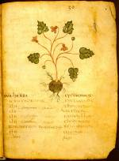

Liber herbarius. Latijn. Handschrift op perkament, 104 ff., circa 270 x 200 mm. Zuid-Italië(?), tweede helft van de zesde, of zevende eeuw. -- (VLQ 9)
Dit kruidenboek is het oudste geïllumineerde Latijnse handschrift met botanische illustraties dat bewaard is. Herkomst en datering zijn moeilijk vast te stellen. Het meest waarschijnlijk is het in Zuid-Italië gemaakt, maar een Zuidfranse herkomst is niet uitgesloten. In elk geval was het handschrift in de vijftiende eeuw in het bezit van een Fransman.
Dioscurides (zie nummer 94) was het model voor de Latijnse herbaria. De twee voornaamste werken in dit handschrift, Antonius Musa en Pseudo-Apuleius, beide herbaria ten dienste van de geneeskunst, werden de hele middeleeuwen door gezamenlijk afgeschreven, bestudeerd en bewerkt.
De afbeeldingen in het Leidse handschrift sluiten in stijl en kleurstelling nog nauw aan bij de laat-Romeinse traditie. Toch hadden de soms fraaie afbeeldingen als gevolg van het kopiëren al wat van hun naturalistisch karakter verloren, zoals blijkt uit de hier getoonde illustratie van een cyclaam op folio 42r. De weergave van de kleuren is wel geslaagd. De beharing van de knol en de vorm van blad en bloem zijn herkenbaar. Maar de vertakking van de stengel klopt niet.
Voorafgaand aan de cyclaam is de gentiaan besproken. De gedroogde wortel daarvan gold als een middel tegen slangebeten. Vandaar de afbeelding van een slang op de linker pagina.
Literatuur
- A.W. Byvanck, Les principaux manuscrits à peintures conservés dans les collections publiques du Royaume des Pays-Bas, Paris 1931 ( = Bulletin de la Société francaise de reproduction des manuscrits à peintures. 15), p. 58-61, pl. XVII.
- K. Weitzmann, Illustrations in roll and codex. A study of the origin of text illustration. Princeton 1947, p. 135.
- K.A. de Meyïer, Codices Vossiani Latini. Leiden 1973-1984 ( = Bibliotheca Universitatis Leidensis. Codices manuscripti. XIII-XVI), t. 2, p. 20-25, t. 4, p. 7.
- Heide Grape-Albers, Spätantike Bilder aus der Welt des Arztes. Wiesbaden 1977.
| vorige pagina | top pagina |